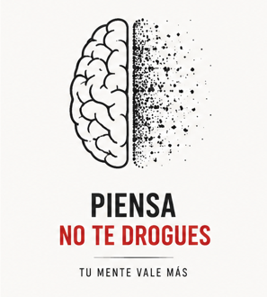

Factores que favorecen el consumo de drogas
La drogadicción surge por la combinación de diversos factores personales, familiares y sociales que aumentan la probabilidad de que una persona inicie el consumo de sustancias y desarrolle dependencia.
Los factores que favorecen el consumo de drogas incluyen problemas familiares, falta de comunicación, baja autoestima, estrés, ansiedad, depresión y presión social. Muchas personas comienzan a consumir sustancias por curiosidad o por el deseo de sentirse aceptadas dentro de un grupo. Además, la disponibilidad de drogas y la influencia del entorno pueden facilitar el inicio del consumo. Cuando estos factores se combinan, el riesgo de desarrollar una adicción aumenta considerablemente.
Influencia de la familia y el entorno social
La familia desempeña un papel fundamental en la formación de hábitos y valores. Un hogar con comunicación, apoyo y supervisión adecuada puede actuar como un factor protector frente al consumo de drogas. En cambio, los conflictos familiares, la violencia, el abandono o la falta de atención pueden incrementar la vulnerabilidad de los jóvenes. Asimismo, la presión ejercida por amigos o compañeros puede llevar a una persona a probar sustancias para sentirse integrada o aceptada socialmente